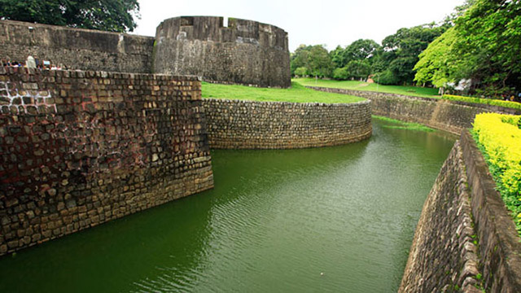
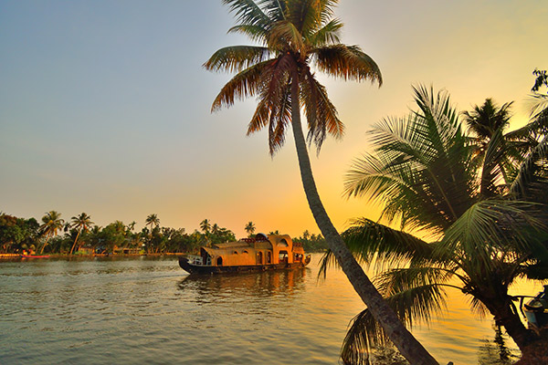
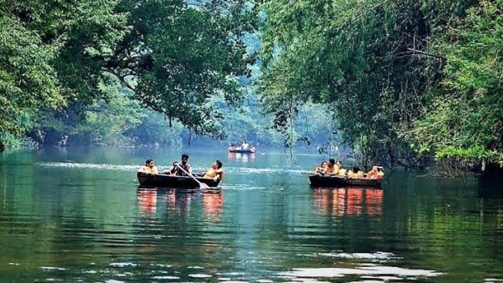

kasaragod
Kasaragod is one of the districts in the northern tip of Kerala.The district is home to the most fascinating forts, rivers, hills and beautiful beaches. The fort at Bekal is the largest and best preserved fort in the state.
Tourist placeskannur
Kannur is a coastal city in the south Indian state of Kerala.Kannur is most renowned for the Theyyam performances in its temples.
Wayanad
Wayanad adorns the northern tip of Kerala and that have natural charm and beauty. Many prominent resorts have come up in this area as well and provide our visitors with many adventure sports and trekking options in the very palms of nature.
Tourist places
Kozhikode
he legendary seaport where Arab, Chinese and East African traders once converged, Kozhikode was previously the most crucial region of the Malabar Coast. Lush green countryside, serene beaches, historic sites, wildlife sanctuaries, rivers and hills make Kozhikode a popular destination.
Malappuram
Malappuram district has a rich and vibrant history.Malappuram literally means a land atop hills and the region is enriched by three great rivers flowing through it - the Chaliyar, Kadalundi and the Bharathapuzha.

Palakkad
Celebrated as the Granary of Kerala, Palakkad is a vast stretch of fertile plains interspersed with hills, rivers, mountain streams and forests. A potpourri of Tamil and Kerala culture, some of the finest Carnatic musicians hail from this district which continues to be a principally agrarian society.

Thrissur
he cultural capital of Kerala, the Poorams or temple festivals in Thrissur draw in thousands of people every single year as these carnivals encapsulate every single part of Kerala's rich heritage.Thrissur is a place one must visit at least once in their lifetime. The people, swaying with the beats of the chenda, shall help you understand the true heart and spirit of Kerala.
Tourist places
Ernakulam
Ernakulam is a sprawling metropolis that beautifully combines its natural wonders with providing a base for a majority of the State’s business enterprises.The city of Kochi, with its fine natural harbour, is the undisputed crown jewel of the district.Ernakulam has always epitomized the Malayali spirit of welcoming all who visit it and this tradition continues to this day.

Idukki
Idukki is Kerala's second largest district and has been blessed with numerous natural wonders. The high valleys and hill ranges of this landlocked region are fed by three major rivers - Periyar, Thalayar and Thodupuzhayar and their tributaries.
Tourist placesKottayam
Kottayam district is famous for its rich heritage and literary tradition. It is renowned for its spice and rubber trade.Cradled by the backwaters and the Western Ghats, it is epitomised by its stretches of vast greenery, paddy fields and huge rubber plantations.
Tourist places

Alappuzha
Affectionately nicknamed the 'Venice of the East' by travellers from across the world, Alappuzha is a district of immense natural beauty. Embraced by the Arabian Sea in the west and a network of lakes, lagoons and freshwater rivers criss-crossing it, this backwater country is home toa vibrant animal and avian life.

Pathanamthitta
A hilly province of pristine splendour, the district of Pathanamthitta is hailed as the headquarters of pilgrim worship in Kerala. Pathanamthitta has been dubbed a Heritage Village as it attracts visitors from all over the world for its spectacular water fiestas, religious shrines and cultural training centres.

Kollam
One of the premier trade capitals of the Old World, Kollam is the centre of the country’s cashew trading and processing industry. The momentous decision to introduce a new Malayalam era was convened at Kollam and hence the Malayalam calendar came to be known as kollavarsham.
Thiruvananthapuram
Located in the southwestern tip of India, Thiruvananthapuram is bound by the Arabian Sea in the west and Tamil Nadu in the east. A long shoreline with internationally renowned beaches, historic monuments, backwater stretches and a rich cultural heritage make this district a much sought-after tourist destination.